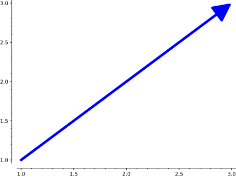

Note that we had to index the arrow to get the Arrow graphics
primitive. We can also change the height via the Graphics.plot3d()
method, but only as a whole:
Optional arguments place both the head and tail outside the
\(xy\)-plane, but at different heights. This must be done on
the graphics primitive obtained by indexing:
If tailpoint and headpoint are provided, returns an arrow from
(xtail, ytail) to (xhead, yhead). If tailpoint or headpoint is None and
path is not None, returns an arrow along the path. (See further info on
paths in bezier_path).
INPUT:
tailpoint - the starting point of the arrow
headpoint - where the arrow is pointing to
path - the list of points and control points (see bezier_path for
detail) that the arrow will follow from source to destination
head - 0, 1 or 2, whether to draw the head at the start (0), end (1)
or both (2) of the path (using 0 will swap headpoint and tailpoint).
This is ignored in 3D plotting.
linestyle - (default: 'solid') The style of the line, which is
one of 'dashed', 'dotted', 'solid', 'dashdot',
or '--', ':', '-', '-.', respectively.
width - (default: 2) the width of the arrow shaft, in points
color - (default: (0,0,1)) the color of the arrow (as an RGB tuple or
a string)
hue - the color of the arrow (as a number)
arrowsize - the size of the arrowhead
arrowshorten - the length in points to shorten the arrow (ignored if
using path parameter)
legend_label - the label for this item in the legend
legend_color - the color for the legend label
zorder - the layer level to draw the arrow– note that this is
ignored in 3D plotting.
EXAMPLES:
A straight, blue arrow:
sage: arrow2d((1,1),(3,3))Graphics object consisting of 1 graphics primitive
Make a red arrow:
sage: arrow2d((-1,-1),(2,3),color=(1,0,0))Graphics object consisting of 1 graphics primitive
sage: arrow2d((-1,-1),(2,3),color='red')Graphics object consisting of 1 graphics primitive
You can change the width of an arrow:
sage: arrow2d((1,1),(3,3),width=5,arrowsize=15)Graphics object consisting of 1 graphics primitive

Use a dashed line instead of a solid one for the arrow:
sage: arrow2d((1,1),(3,3),linestyle='dashed')Graphics object consisting of 1 graphics primitivesage: arrow2d((1,1),(3,3),linestyle='--')Graphics object consisting of 1 graphics primitive
A pretty circle of arrows:
sage: sum([arrow2d((0,0),(cos(x),sin(x)),hue=x/(2*pi))forxin[0..2*pi,step=0.1]])Graphics object consisting of 63 graphics primitives
If we want to draw the arrow between objects, for example, the
boundaries of two lines, we can use the arrowshorten option
to make the arrow shorter by a certain number of points: